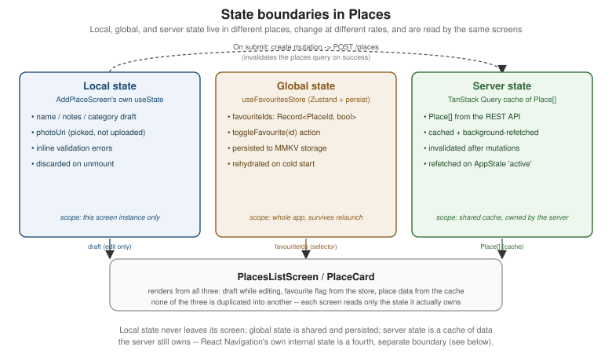

State Management
|
This content was generated with the assistance of AI and should be verified against the official documentation before being relied on in production. |
Core Components and React Fundamentals and
Styling both introduced pieces of Places's state in passing — a
useState draft, a useFavouritesStore reference — without explaining why each one lives where it does. This
page covers that in full: the three kinds of state a React Native screen deals with, when props drilling stops
being fine, the global-state libraries that replace it (Context + useReducer, Zustand, Redux Toolkit, and
MobX), and why server data is not really "state" to manage by hand at all. It ends with Places's favourites
feature implemented three ways for direct comparison, the same way Styling compared four ways to style the same
PlaceCard. Networking and Data Fetching (later in
this section) covers TanStack Query itself in full — fetching, caching, mutations, retries — this page only
covers the boundary between server state and everything else.
Local, Global, and Server State
Not every piece of data a screen touches belongs in the same place, and treating all of it the same way — either stuffing everything into one global store, or drilling every value down through props — is the single most common state-management mistake in a growing app. Three categories cover essentially everything Places holds:
-
Local state — owned by one screen or component, meaningless anywhere else, and gone the moment that component unmounts:
AddPlaceScreen’s in-progress `name/notes/categorydraft before the form is submitted, aModal’s open/closed flag, a `TextInput’s focus state. `useState(oruseReducerfor a single component with several related fields) is the entire solution here — nothing in this page changes that. -
Global (client/UI) state — shared across screens, needs to survive navigation, and sometimes needs to survive an app relaunch: Places's
favouriteIds, a signed-in user’s id, a "has completed onboarding" flag. This is what Context +useReducer, Zustand, Redux Toolkit, and MobX all compete to manage, covered below. -
Server state — data that actually lives on a server and is only ever cached on the device: Places's own
Place[]list. It has its own lifecycle (fetch, cache, background-refetch, invalidate, retry on failure) that has nothing to do with client state management, which is why TanStack Query (below) exists as a wholly separate tool rather than another global-store flavor.

Props Drilling and When to Stop
Passing a value down through two or three intermediate components that do not themselves use it — props
drilling — is not automatically wrong; it is often the simplest, most explicit option, and it is exactly what
PlaceCard’s own `onPress/onToggleFavourite callbacks already do from PlacesListScreen. It stops being fine
once either of two things happens: the same value needs to reach components on unrelated branches of the tree
(a favourite star needs to update on both PlacesListScreen and PlaceDetailsScreen at once, with no shared
parent worth threading it through), or the drilling chain grows long enough that a component three levels deep
exists mostly to forward props it never reads itself. Places's favouriteIds hits the first case almost
immediately — which is why it lives in a store, not a prop chain, from the very first page that needs it.
Context and useReducer
React’s own built-in escape hatch from props drilling is a Context paired with useReducer for anything more
structured than a single boolean: a Provider holds the state and a dispatch function, and any descendant
calls useContext to read or update it without a single intermediate prop. Applied to Places's favourites:
// src/features/places/store/FavouritesContext.tsx
import { createContext, useContext, useMemo, useReducer } from 'react';
import type { ReactNode } from 'react';
import type { PlaceId } from '../types';
interface FavouritesState {
favouriteIds: Record<PlaceId, boolean>;
}
type FavouritesAction = { type: 'TOGGLE_FAVOURITE'; id: PlaceId };
function favouritesReducer(state: FavouritesState, action: FavouritesAction): FavouritesState {
switch (action.type) {
case 'TOGGLE_FAVOURITE':
return {
favouriteIds: { ...state.favouriteIds, [action.id]: !state.favouriteIds[action.id] },
};
default:
return state;
}
}
interface FavouritesContextValue extends FavouritesState {
toggleFavourite: (id: PlaceId) => void;
}
const FavouritesContext = createContext<FavouritesContextValue | null>(null);
export function FavouritesProvider({ children }: { children: ReactNode }) {
const [state, dispatch] = useReducer(favouritesReducer, { favouriteIds: {} });
const value = useMemo<FavouritesContextValue>(
() => ({
...state,
toggleFavourite: (id) => dispatch({ type: 'TOGGLE_FAVOURITE', id }),
}),
[state]
);
return <FavouritesContext.Provider value={value}>{children}</FavouritesContext.Provider>;
}
export function useFavourites(): FavouritesContextValue {
const context = useContext(FavouritesContext);
if (context === null) {
throw new Error('useFavourites must be used within a FavouritesProvider');
}
return context;
}This is the crucial limitation to understand before reaching for Context as a general-purpose store: Context
has no selector mechanism. useContext(FavouritesContext) subscribes a component to the entire context
value, so toggling one place’s favourite flag re-renders every single component under FavouritesProvider that
calls useFavourites() — a hundred PlaceCard`s on `PlacesListScreen, not just the one that changed — because
React has no way to know that a component only cares about favouriteIds[42] rather than the whole object.
useMemo around the provider’s value avoids creating a new object on every provider render, but it does
nothing about a re-render triggered by an actual state change, which is the case that matters here. This makes
Context + useReducer a fine choice for state that changes rarely (a theme, an auth session) and a poor one for
state that changes often and is read by many list rows at once — exactly Places's favourites use case, and
exactly the problem the selector-based stores below solve.
Global State Libraries
Zustand
Zustand is a small, hook-based store with no boilerplate action types, no reducer switch statement, and — critically, given the Context problem above — selector-based subscriptions: a component that reads
state.favouriteIds[placeId] through a selector only re-renders when that specific value changes, not on every
store update. This is Places's actual, canonical favourites store, reused unmodified by every other page in
this section that needs it:
// src/features/places/store/useFavouritesStore.ts
import { create } from 'zustand';
import { persist, createJSONStorage } from 'zustand/middleware';
import type { StateStorage } from 'zustand/middleware';
import { MMKV } from 'react-native-mmkv';
import type { PlaceId } from '../types';
const mmkv = new MMKV({ id: 'places-favourites' });
const mmkvStorage: StateStorage = {
setItem: (name, value) => {
mmkv.set(name, value);
},
getItem: (name) => {
const value = mmkv.getString(name);
return value ?? null;
},
removeItem: (name) => {
mmkv.delete(name);
},
};
interface FavouritesState {
favouriteIds: Record<PlaceId, boolean>;
toggleFavourite: (id: PlaceId) => void;
}
export const useFavouritesStore = create<FavouritesState>()(
persist(
(set, get) => ({
favouriteIds: {},
toggleFavourite: (id) =>
set({ favouriteIds: { ...get().favouriteIds, [id]: !get().favouriteIds[id] } }),
}),
{
name: 'places-favourites-storage',
storage: createJSONStorage(() => mmkvStorage),
}
)
);persist wraps the store with automatic save-on-change and load-on-startup, but it needs somewhere durable to
read and write to — createJSONStorage adapts any object shaped like Zustand’s StateStorage (synchronous
getItem/setItem/removeItem) into that persistence layer, and mmkvStorage above is exactly that adapter
wrapping an MMKV instance from react-native-mmkv, the fast, synchronous key-value store
Storage and Offline (later in this section) covers in full.
Reading the store with a selector is what actually avoids the Context re-render problem:
function FavouriteToggle({ placeId }: { placeId: PlaceId }) {
const isFavourite = useFavouritesStore((s) => s.favouriteIds[placeId] ?? false);
const toggleFavourite = useFavouritesStore((s) => s.toggleFavourite);
return (
<Pressable onPress={() => toggleFavourite(placeId)} hitSlop={8}>
<Text>{isFavourite ? '★' : '☆'}</Text>
</Pressable>
);
}Zustand runs (s) ⇒ s.favouriteIds[placeId] ?? false against every store update and, by default, compares the
result with Object.is — so a FavouriteToggle for place "7" only re-renders when favouriteIds["7"]
itself changes, never when a different place’s flag toggles. A hundred PlaceCard`s on `PlacesListScreen, each
using this same selector with its own placeId, therefore re-render one at a time as each favourite is toggled,
not all at once the way every Context consumer did above — the exact granular-subscription property Context has
no built-in way to offer.
Redux Toolkit
Redux Toolkit (@reduxjs/toolkit, almost always paired with react-redux) is the modern, opinionated way to
write Redux: createSlice generates action creators and a reducer from a single object instead of hand-written
action types and a switch statement, createAsyncThunk wraps an async operation (an API call) into a dispatchable
action with automatic pending/fulfilled/rejected action types, and RTK Query (bundled in the same package)
is Redux Toolkit’s own answer to server-state caching — functionally overlapping with TanStack Query, and the
right choice specifically for a team that wants server-state caching to live inside the same Redux store and
DevTools timeline as everything else, rather than in a separate cache.
The same favourites feature as a slice:
// src/features/places/store/favouritesSlice.ts
import { createSlice } from '@reduxjs/toolkit';
import type { PayloadAction } from '@reduxjs/toolkit';
import type { PlaceId } from '../types';
interface FavouritesState {
favouriteIds: Record<PlaceId, boolean>;
}
const initialState: FavouritesState = { favouriteIds: {} };
const favouritesSlice = createSlice({
name: 'favourites',
initialState,
reducers: {
toggleFavourite: (state, action: PayloadAction<PlaceId>) => {
const id = action.payload;
state.favouriteIds[id] = !state.favouriteIds[id];
},
},
});
export const { toggleFavourite } = favouritesSlice.actions;
export default favouritesSlice.reducer;state.favouriteIds[id] = !state.favouriteIds[id] above looks like a direct mutation, but it is not one — Redux Toolkit’s reducers run through Immer under the hood, which records that assignment against a draft and
produces a real, brand-new immutable state object, the same end result the Context reducer’s explicit spread
achieved by hand.
// src/app/store.ts
import { configureStore } from '@reduxjs/toolkit';
import favouritesReducer from '../features/places/store/favouritesSlice';
export const store = configureStore({
reducer: {
favourites: favouritesReducer,
},
});
export type RootState = ReturnType<typeof store.getState>;
export type AppDispatch = typeof store.dispatch;// src/app/hooks.ts -- typed wrappers, the conventional Redux Toolkit + TypeScript pattern
import { useDispatch, useSelector } from 'react-redux';
import type { TypedUseSelectorHook } from 'react-redux';
import type { RootState, AppDispatch } from './store';
export const useAppDispatch: () => AppDispatch = useDispatch;
export const useAppSelector: TypedUseSelectorHook<RootState> = useSelector;function FavouriteToggle({ placeId }: { placeId: PlaceId }) {
const isFavourite = useAppSelector((s) => s.favourites.favouriteIds[placeId] ?? false);
const dispatch = useAppDispatch();
return (
<Pressable onPress={() => dispatch(toggleFavourite(placeId))} hitSlop={8}>
<Text>{isFavourite ? '★' : '☆'}</Text>
</Pressable>
);
}useAppSelector gives Redux Toolkit the same granular, selector-based re-rendering Zustand has — react-redux
also compares the selector’s result and skips re-rendering a component whose slice of state did not change — so the re-render-cost comparison between this and Zustand is genuinely close. What differs is everything around
the store: a team actually wants Redux Toolkit over Zustand when several things are true at once — a large
app with many developers, where a single, opinionated, heavily-documented convention for "how state is
structured and updated" is worth its extra ceremony; strict architectural conventions are a project goal in
themselves, not just a personal preference; there is already a Redux investment (existing slices, a team
that already knows the APIs) that a rewrite would waste; or Redux DevTools' time-travel debugging — stepping
backward and forward through every dispatched action to inspect exactly how the state got where it is — is a
capability the team actively relies on, which no selector-based store without a comparable devtools story
matches out of the box.
MobX
MobX takes a third approach entirely: observables, not an immutable state tree. A plain class’s fields are marked observable, its methods that change them are actions, and any component that reads an observable inside its render automatically reacts to future changes to exactly the values it read — no reducer, no action-type constants, no selector function to write by hand.
// A MobX equivalent of the favourites store, shown for comparison only -- not used elsewhere in this section.
import { makeAutoObservable } from 'mobx';
import type { PlaceId } from '../types';
class FavouritesStore {
favouriteIds: Record<PlaceId, boolean> = {};
constructor() {
makeAutoObservable(this);
}
toggleFavourite(id: PlaceId): void {
this.favouriteIds[id] = !this.favouriteIds[id];
}
}
export const favouritesStore = new FavouritesStore();import { observer } from 'mobx-react-lite';
const FavouriteToggle = observer(({ placeId }: { placeId: PlaceId }) => (
<Pressable onPress={() => favouritesStore.toggleFavourite(placeId)} hitSlop={8}>
<Text>{favouritesStore.favouriteIds[placeId] ? '★' : '☆'}</Text>
</Pressable>
));makeAutoObservable turns every field into an observable and every method into an action in one call, and
wrapping a component in observer gives it the same fine-grained, per-value re-rendering Zustand’s selectors and
Redux Toolkit’s useSelector both provide — observer tracks exactly which observables FavouriteToggle’s
render actually touched (`favouriteIds[placeId], not the whole map) and re-renders only when one of those
changes. MobX trades Zustand’s and Redux Toolkit’s explicitness (a visible set/reducer call for every change)
for less boilerplate overall, at the cost of state changes that can happen from a direct method call anywhere in
the codebase rather than always flowing through one visible action creator. It remains a capable, production-
proven choice, but it is markedly less common as the default pick for a new React Native project started today
than Zustand or Redux Toolkit are — most teams starting fresh reach for one of those two first, and pick MobX
specifically when its observable/reaction model is already familiar from another project.
Server State: TanStack Query
None of the four libraries above is the right tool for Places's Place[] list, because that data is not
client state at all — it is a cache of something the server owns, with its own lifecycle (stale, refetching,
invalidated, retried after a failure) that a hand-rolled useState/Zustand/Redux slice would have to reimplement
badly: manual loading/error flags, no automatic refetch, no deduping of two components requesting the same data
at once, no cache invalidation after a mutation. TanStack Query is purpose-built for exactly this boundary:
import { useQuery } from '@tanstack/react-query';
import { fetchPlaces } from '../api/placesApi';
function usePlaces() {
return useQuery({ queryKey: ['places'], queryFn: fetchPlaces });
}This page stops here deliberately — queries, mutations, cache invalidation, retries, and pagination are all
covered in full on Networking and Data Fetching. The
one rule worth internalizing now: if a value is fetched from an API, it belongs in a TanStack Query cache, not in
Zustand/Redux/MobX/Context alongside genuinely client-owned state like favouriteIds.
Mobile-Specific State Concerns
Navigation State Is Not App State
React Navigation (covered earlier in this section) already owns its own
internal state — which screen is focused, the back stack, in-flight gesture transitions — and manages it
internally without any help from Zustand, Redux, or Context. Duplicating "the current route" or "the back stack"
into a global store is a common mistake ported over from web habits (where a router’s state sometimes is just
regular app state); on React Navigation it is redundant at best, and a source of state going out of sync with the
navigator at worst, because the navigator does not know or care that a store also thinks it is tracking the same
thing. The one legitimate exception is reading navigation state for other purposes (analytics, deep-link
restoration) through React Navigation’s own getState()/onStateChange APIs — never mirroring it into a
second store as the source of truth.
Persisting and Rehydrating State on Cold Start
Places's favourites need to be there the instant the app opens, not fetched or rebuilt — which is exactly what
Zustand’s persist middleware, configured with the MMKV adapter above, already does: useFavouritesStore
rehydrates from disk synchronously before the first render that reads it, no loading flag required. Redux
Toolkit’s equivalent is redux-persist, wrapping the root reducer with a persistReducer and pairing
configureStore with a PersistGate (or, on React Native, an equivalent "wait for rehydration" check, since
there is no browser localStorage to persist to by default) so the app does not render with an empty store for
one frame before the persisted values load. Both approaches solve the same problem the same way: pick a storage
engine (MMKV, AsyncStorage, or a SQLite-backed adapter), serialize on every change, and deserialize once at
startup before app content renders.
AppState-Aware Refetching
A mobile app backgrounds and foregrounds constantly — switching to another app, taking a phone call, locking the
screen — and server state that was fresh when the user left can be stale by the time they come back, with no
webpage focus event to notice automatically. React Native’s AppState module is the mobile equivalent:
import { AppState, Platform } from 'react-native';
import type { AppStateStatus } from 'react-native';
import { focusManager } from '@tanstack/react-query';
function onAppStateChange(status: AppStateStatus) {
if (Platform.OS !== 'web') {
focusManager.setFocused(status === 'active');
}
}
AppState.addEventListener('change', onAppStateChange);TanStack Query’s focusManager is what its refetchOnWindowFocus behavior is actually built on — on the web it
listens to the browser’s own focus event, and on React Native there is no such event, so wiring AppState’s
’change' event into focusManager.setFocused yourself (once, near the app’s root) is what makes "Places
refetches its data when the user returns to the foreground" work at all. This is purely a server-state
concern — client state in Zustand/Redux/MobX does not go stale the way a server response does, so none of those
stores need an AppState listener of their own.
Choosing an Approach
| Approach | Use it when | Avoid it when |
|---|---|---|
Local ( |
The value is owned by one screen or component and nothing outside it ever needs to read or change it (a form draft, a modal’s open flag). |
Two unrelated branches of the tree need the same value, or a long props-drilling chain is forwarding it through components that never read it themselves. |
Context + |
The value changes rarely (a theme, an auth session, a feature flag) and is read by relatively few consumers at once — no external dependency, built into React. |
The value changes often and is read by many components simultaneously (a list of favourite flags) — every consumer re-renders on every change, with no selector mechanism to narrow that down. |
Zustand |
Global, frequently-changing client state that needs granular, selector-based re-rendering with minimal boilerplate — Places's own default and the canonical choice for a new React Native project today. |
The team specifically wants enforced, uniform conventions across many developers, or already has a large existing Redux codebase to build on rather than replace. |
Redux Toolkit |
A large app, many developers, a need for one strict, well-documented convention everyone follows, an existing Redux investment, or a hard requirement on Redux DevTools' time-travel debugging. |
A small-to-mid app or a small team, where Zustand’s far smaller amount of boilerplate reaches the same selector-based re-rendering with less ceremony. |
MobX |
The team already knows and prefers an observable/action/reaction model from another project, and wants less boilerplate than either Zustand or Redux Toolkit for the same granular reactivity. |
Starting a brand-new React Native project with no prior MobX experience on the team — Zustand or Redux Toolkit are the more common default picks today. |
TanStack Query |
The data is fetched from a server/API and needs caching, deduping, background refetch, or invalidation after a
mutation — Places's |
The value is not server-owned at all (a UI toggle, a form draft, a favourite flag) — TanStack Query is not a client/UI state manager and should never hold state nothing ever fetches from a server. |
Places: Favourites, Three Ways
The three global-state implementations above are directly comparable because all three operate on the exact same
shape, Record<PlaceId, boolean>, keyed by place id:
(a) Context + useReducer
Shown in full above: a FavouritesProvider wrapping the part of the tree that needs favourites, and a
useFavourites() hook reading { favouriteIds, toggleFavourite } from it. Every PlaceCard under the provider
re-renders whenever any place’s favourite flag changes — acceptable for a small, static list, and the reason
this version is shown for comparison only rather than used elsewhere in this section.
(b) useFavouritesStore (Zustand + persist, MMKV) — the canonical version
The exact store defined above, reused unmodified by every other page in this section that reads or toggles a
favourite. Its persist + MMKV pairing means favourites survive an app relaunch with no extra code at the call
site, and its selector-based reads mean only the one PlaceCard whose flag actually changed re-renders.
References
Zustand, Redux Toolkit, and MobX are covered here for global client state; TanStack Query is introduced above only at the boundary and covered in full on Networking and Data Fetching.